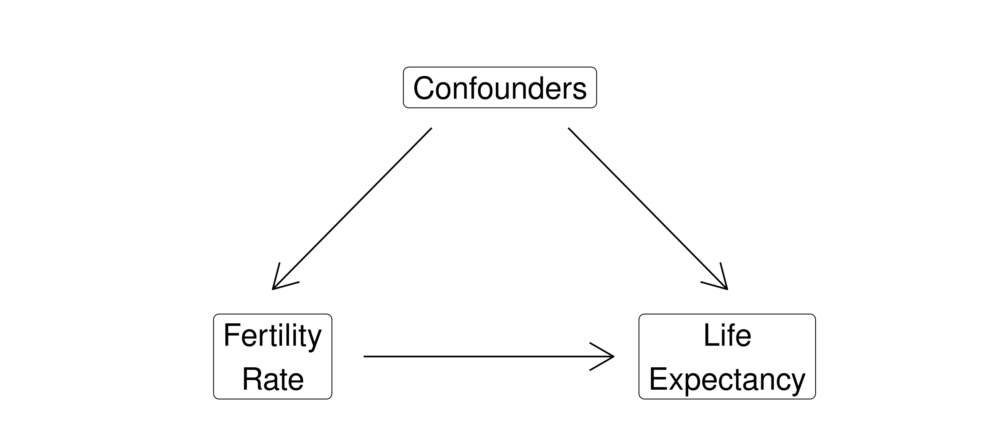
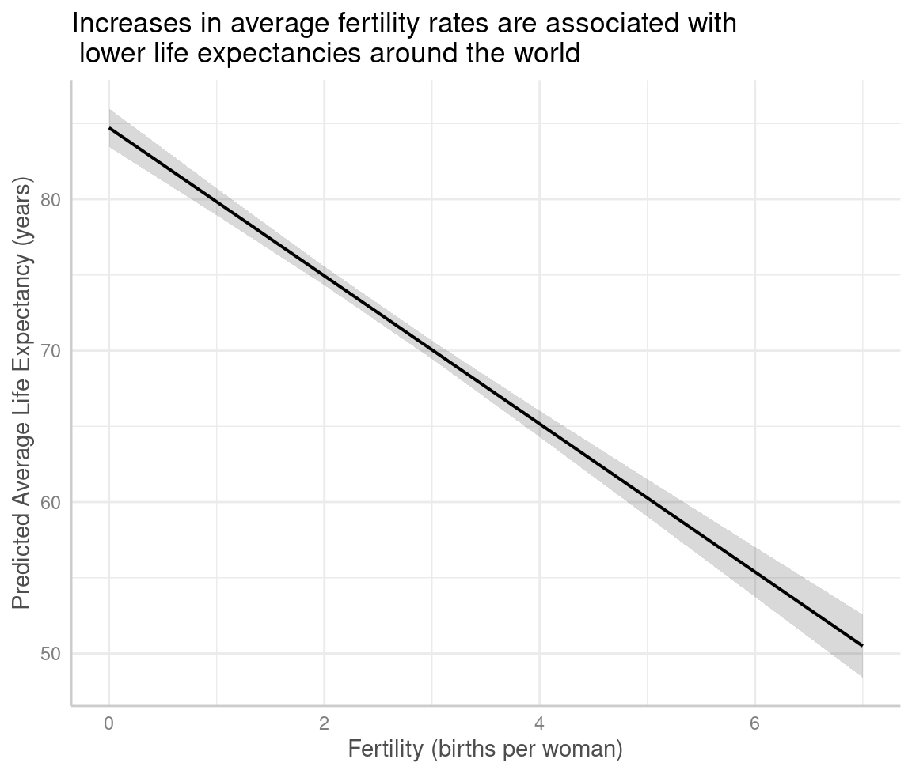
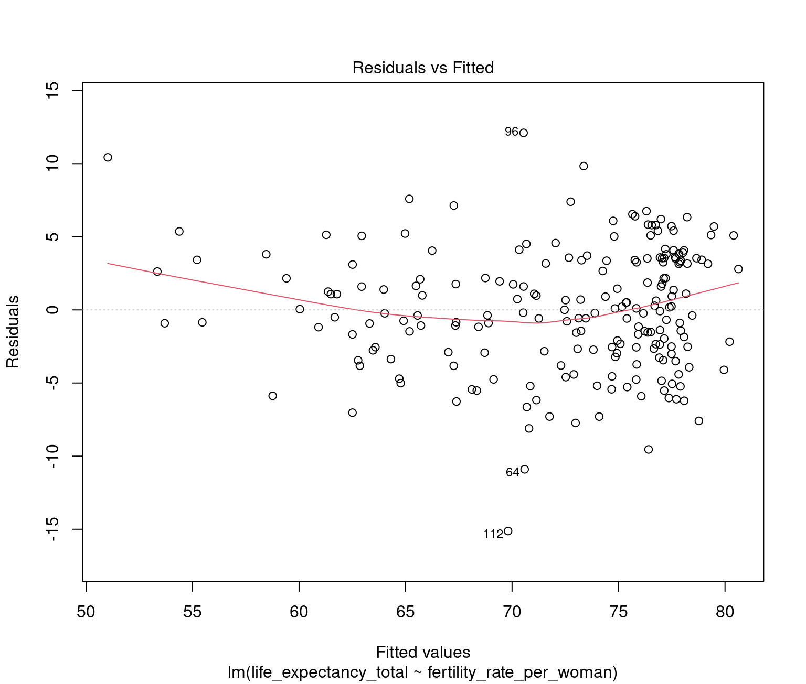
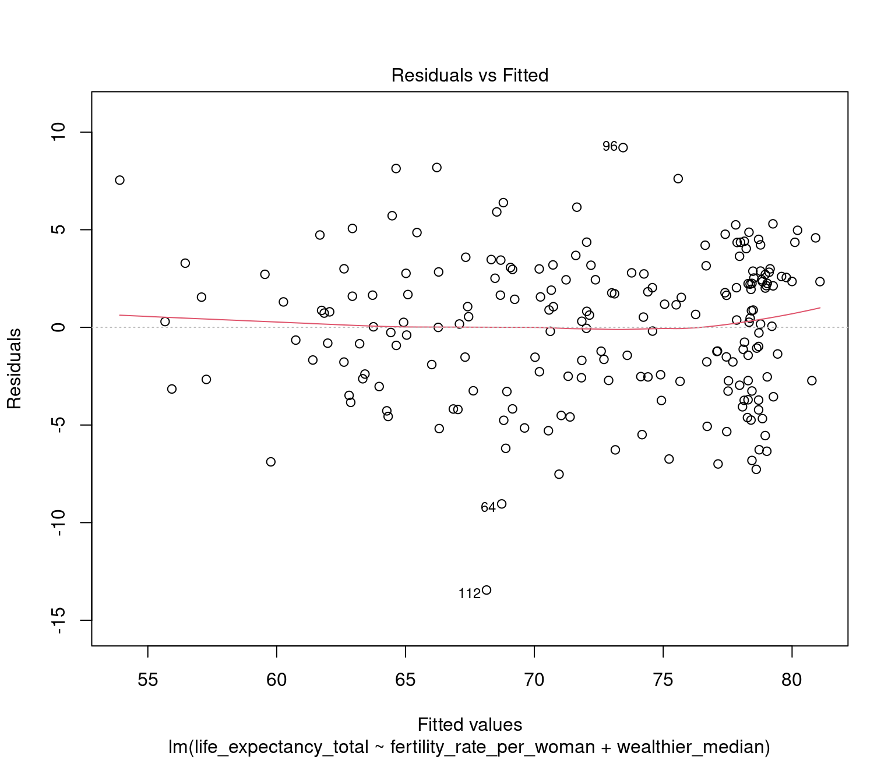
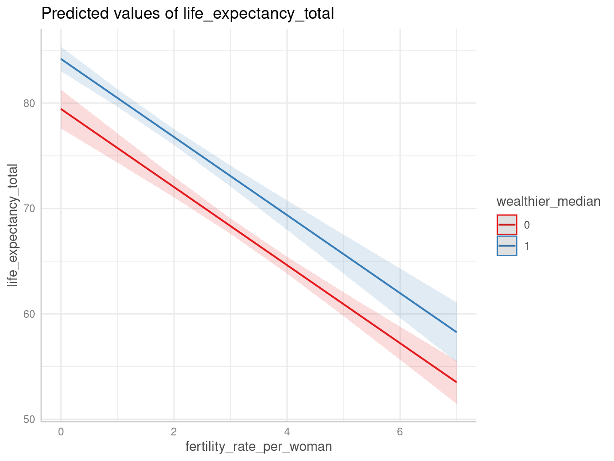
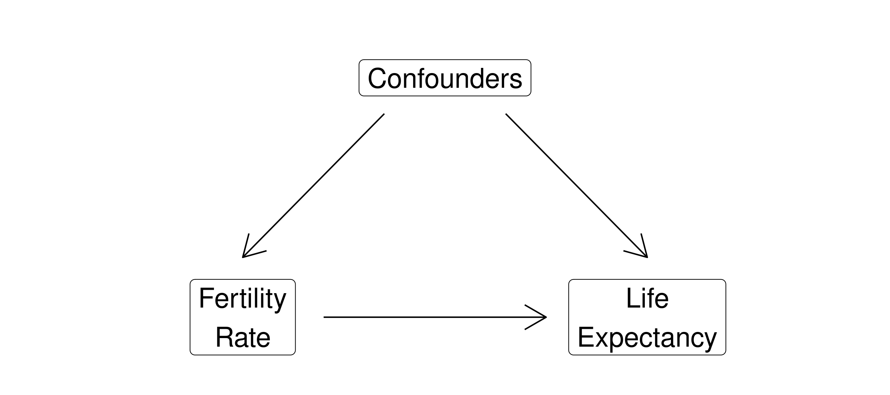

Today’s Agenda
Multivariate Analyses
- Adding confounders to OLS regressions
Justin Leinaweaver (Spring 2024)
Building a Causal Argument

Possible Confounders: GDP per capita, unemployment rate, tobacco use, compulsory education
Why use OLS regressions?
Assumes “regression to the mean”
Quantifies the relationship between variables
Uses ALL of the data
Provides estimates of uncertainty
Can be adjusted for non-linear effects and confounders
Ordinary Least Squares (OLS) Regression
OLS regression is a technique for estimating the relationship between an outcome (Y) and a predictor variable (X) by finding the line that minimizes the squared residuals.
\[Y = \alpha + \beta X\]
Our Baseline Estimate
| Baseline | |
|---|---|
| Fertility (births per woman) | -4.89* |
| (0.23) | |
| Constant | 84.72* |
| (0.65) | |
| Num.Obs. | 209 |
| R2 | 0.691 |
| R2 Adj. | 0.689 |
| RMSE | 4.15 |
| * p < 0.05 | |

Our Baseline Estimate
| Baseline | |
|---|---|
| Fertility (births per woman) | -4.89* |
| (0.23) | |
| Constant | 84.72* |
| (0.65) | |
| Num.Obs. | 209 |
| R2 | 0.691 |
| R2 Adj. | 0.689 |
| RMSE | 4.15 |
| * p < 0.05 | |

Ordinary Least Squares (OLS) Regression
Multiple OLS regression estimates the relationship between an outcome (Y) and a series of predictor variables (X\(_i\)) by finding the line that minimizes the squared residuals.
\[Y = \alpha + \beta_1 X_1 + \beta_2 X_2 + ... + \beta_k X_k\]
1. Find the median of wealth
Min. 1st Qu. Median Mean 3rd Qu. Max. NA's
216.8 2262.2 6370.9 17547.1 22805.3 182537.4 7 2. Create a dummy variable
3. Fit a multiple regression using the dummy confounder
Multiple Regression: Add a Dummy Confounder
| (1) | (2) | |
|---|---|---|
| Fertility (births per woman) | -4.89* | -3.70* |
| (0.23) | (0.26) | |
| Wealth > Median | 4.75* | |
| (0.67) | ||
| Constant | 84.72* | 79.44* |
| (0.65) | (0.94) | |
| Num.Obs. | 209 | 202 |
| R2 | 0.691 | 0.756 |
| R2 Adj. | 0.689 | 0.753 |
| RMSE | 4.15 | 3.67 |
| * p < 0.05 | ||
Model 1: Simple
- \[Y = \alpha + \beta_1 X_1\]
Model 2: Multiple
- \[Y = \alpha + \beta_1 X_1 + \beta_2 X_2\]
Multiple Regression: Add a Dummy Confounder
| (1) | (2) | |
|---|---|---|
| Fertility (births per woman) | -4.89* | -3.70* |
| (0.23) | (0.26) | |
| Wealth > Median | 4.75* | |
| (0.67) | ||
| Constant | 84.72* | 79.44* |
| (0.65) | (0.94) | |
| Num.Obs. | 209 | 202 |
| R2 | 0.691 | 0.756 |
| R2 Adj. | 0.689 | 0.753 |
| RMSE | 4.15 | 3.67 |
| * p < 0.05 | ||
Model 1: Simple
- Life_Exp = 84.72 + -4.89 (Fertility)
Model 2: Multiple
- \[Y = \alpha + \beta_1 X_1 + \beta_2 X_2\]
Multiple Regression: Add a Dummy Confounder
| (1) | (2) | |
|---|---|---|
| Fertility (births per woman) | -4.89* | -3.70* |
| (0.23) | (0.26) | |
| Wealth > Median | 4.75* | |
| (0.67) | ||
| Constant | 84.72* | 79.44* |
| (0.65) | (0.94) | |
| Num.Obs. | 209 | 202 |
| R2 | 0.691 | 0.756 |
| R2 Adj. | 0.689 | 0.753 |
| RMSE | 4.15 | 3.67 |
| * p < 0.05 | ||
Model 1: Simple
- Life = 84.7 + -4.9 (Fertility)
Model 2: Multiple
- Life = 79.4 + -3.7 (Fertility) + 4.8 (Wealthy)
Multiple Regression: Add a Dummy Confounder
Simple OLS Regression

Multiple OLS Regression 1

Multiple Regression: Add a Dummy Confounder
| (1) | (2) | |
|---|---|---|
| Fertility (births per woman) | -4.89* | -3.70* |
| (0.23) | (0.26) | |
| Wealth > Median | 4.75* | |
| (0.67) | ||
| Constant | 84.72* | 79.44* |
| (0.65) | (0.94) | |
| Num.Obs. | 209 | 202 |
| R2 | 0.691 | 0.756 |
| R2 Adj. | 0.689 | 0.753 |
| RMSE | 4.15 | 3.67 |
| * p < 0.05 | ||
Model 1: Simple
- Life = 84.7 + -4.9 (Fertility)
Model 2: Multiple
- Life = 79.4 + -3.7 (Fertility) + 4.8 (Wealthy)
Multiple Regression: Add a Dummy Confounder

Multiple Regression: Add a Dummy Confounder
| (1) | |
|---|---|
| Fertility (births per woman) | -3.70* |
| (0.26) | |
| Wealth > Median | 4.75* |
| (0.67) | |
| Constant | 79.44* |
| (0.94) | |
| Num.Obs. | 202 |
| R2 | 0.756 |
| R2 Adj. | 0.753 |
| RMSE | 3.67 |
| * p < 0.05 | |

Multiple Regression: Add a Dummy Confounder
| Association | Causal Argument | |
|---|---|---|
| Fertility (births per woman) | -4.89* | -3.70* |
| (0.23) | (0.26) | |
| Wealth > Median | 4.75* | |
| (0.67) | ||
| Constant | 84.72* | 79.44* |
| (0.65) | (0.94) | |
| Num.Obs. | 209 | 202 |
| R2 | 0.691 | 0.756 |
| R2 Adj. | 0.689 | 0.753 |
| RMSE | 4.15 | 3.67 |
| * p < 0.05 | ||
Multiple Regression: Add a Numeric Confounder
Rescale GDP pc (10k)
Fit a multiple regression using the rescaled confounder
| (1) | (2) | (3) | |
|---|---|---|---|
| Fertility (births per woman) | -4.89* | -3.70* | -4.01* |
| (0.23) | (0.26) | (0.22) | |
| Wealth > Median | 4.75* | ||
| (0.67) | |||
| GDP per capita | 1.03* | ||
| (0.12) | |||
| Constant | 84.72* | 79.44* | 80.81* |
| (0.65) | (0.94) | (0.71) | |
| Num.Obs. | 209 | 202 | 202 |
| R2 | 0.691 | 0.756 | 0.777 |
| R2 Adj. | 0.689 | 0.753 | 0.775 |
| F | 462.416 | 307.868 | 346.473 |
| RMSE | 4.15 | 3.67 | 3.51 |
| * p < 0.05 | |||

# Predicted values of life_expectancy_total
fertility_rate_per_woman | Predicted | 95% CI
---------------------------------------------------
0 | 82.49 | 81.28, 83.69
1 | 78.48 | 77.65, 79.31
2 | 74.47 | 73.93, 75.02
3 | 70.46 | 69.93, 70.99
4 | 66.46 | 65.66, 67.26
5 | 62.45 | 61.28, 63.62
6 | 58.44 | 56.87, 60.02
7 | 54.44 | 52.44, 56.43
Adjusted for:
* gdp_pc_10k = 1.62For Next Class

Possible Confounders: GDP per capita, (1) unemployment rate, (2) tobacco use, (3) compulsory education